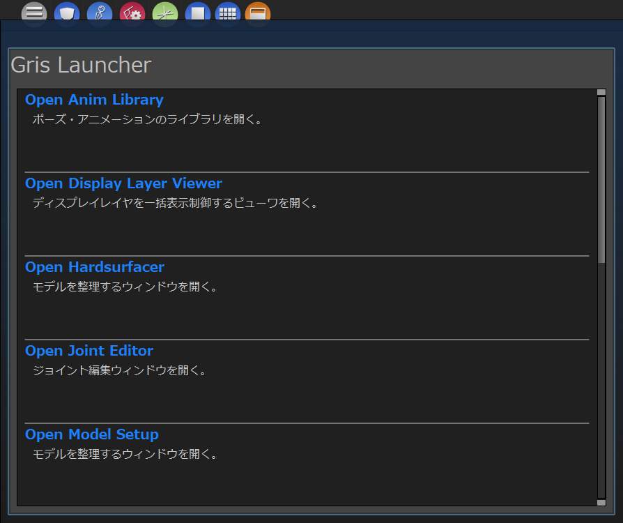
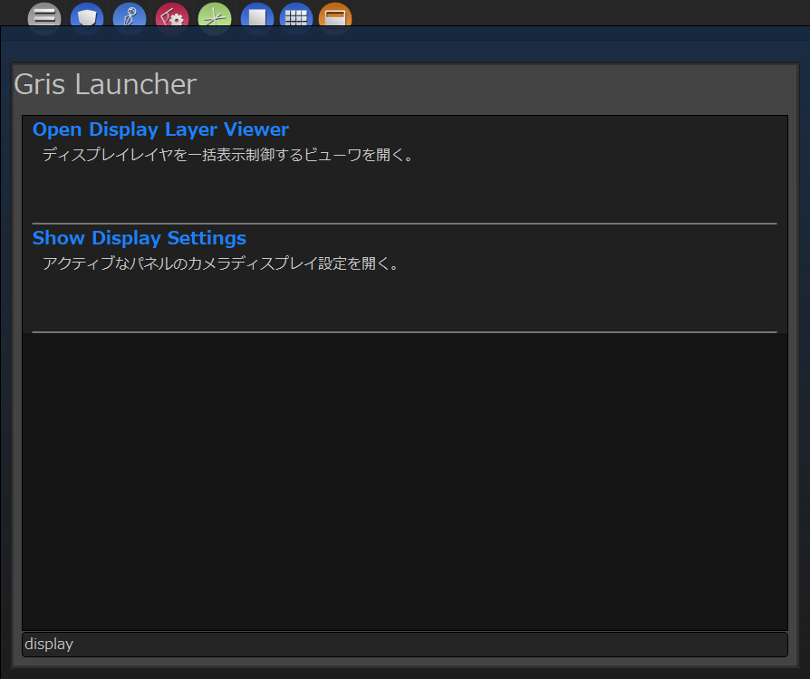
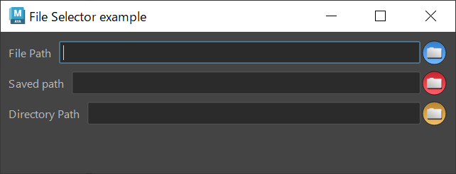

uilib.extendedUIモジュール¶
このモジュールは特殊な用途の拡張GUIを提供します。
FilteredView¶
このクラスはQAbstractItemView系ウィジェットに表示フィルタ機能を追加したものを提供します。
ビューウィジェットはcreateView関数を、モデルはcreateModel関数を用いて任意のものを作成します。
作成されたビューにフォーカスされている時に、Tabキーを押すとフィルタ文字入力用のラインフィールドがビュー下部に表示されます。
{kind=link}
このフィールドに文字を入力すると、ビューはフィルタされた結果を表示します。
{kind=link}
メソッド¶
以下に重要なメソッドを何点かリストアップします。
メソッド名 |
引数 |
戻り値 |
説明 |
createView |
QtWidgets.QAbstractItemView |
このウィジェットに使用するビューを作成して返します。 |
|
createModel |
QtGui.QStandardItemModel |
このウィジェットで使用する任意のItemModelを作成して返します。 |
|
filterKeyColumn |
int |
フィルタに使用するカラム番号を返します。デフォルトは0です。 |
|
view |
QtWidgets.QAbstractItemView |
createViewで作成したビューにアクセスします。 |
使用例¶
1 2 3 4 5 6 7 8 9 10 11 12 13 14 15 16 17 18 19 20 21 22 23 24 25 26 27 28 29 30 31 32 33 34 35 36 37 38 39 40 41 42 43 44 | from gris3.uilib import QtWidgets, QtGui, QtCore
from gris3.uilib import extendedUI, mayaUIlib
class SampleView(extendedUI.FilteredView):
def __init__(self, parent=None):
super(SampleView, self).__init__(parent)
self.setWindowFlags(QtCore.Qt.Window)
self.setWindowTitle('GRIS ExtendedUI - FileteredView')
def createView(self):
r"""
ビューとして使用するQAbstractItemViewのサブクラスを作成して返す。
Returns:
QtWidgets.QListView:
"""
view = QtWidgets.QListView()
view.setVerticalScrollMode(QtWidgets.QListView.ScrollPerPixel)
view.setHorizontalScrollMode(QtWidgets.QListView.ScrollPerPixel)
return view
def createModel(self):
r"""
任意のItemModelを作成して返す。今回はQStringListModel。
Returns:
QtCore.QStringListModel:
"""
return QtCore.QStringListModel()
def setItems(self, itemlist : list):
r"""
ビューにアイテムを追加する。
Args:
itemlist(list):文字列のリスト
"""
model = self.view().model().sourceModel()
model.setStringList(itemlist)
view = SampleView(mayaUIlib.MainWindow)
view.resize(480, 600)
view.setItems(['hoge', 'age', 'sage', 'alpha', 'beta'])
view.show()
|
FileSelector、SavePathSelector、DirectorySelector¶
このクラスはファイルまたはディレクトリを選択するためのダイアログと、選択されたファイルを表示するLineEditがセットになったクラスです。
{kind=link}
メソッド（共通）¶
以下に重要なメソッドを何点かリストアップします。
メソッド名 |
引数 |
戻り値 |
説明 |
setLabel |
label:str |
フィールド横の表示ラベルのテキストを設定します。 |
|
setTitle |
label : str |
ファイルダイアログのウィンドウタイトルを設定します。 |
|
setPath |
path:str normalize:bool |
パス入力フィールドにパスを設定します。 |
|
path |
checkExisting:bool |
str |
フィールドに入力されているファイルパスを返します。 checkExistingがTrueの場合は、フィールド内の文字列のファイルが存在しない時に空文字を返します。 |
使用例¶
1 2 3 4 5 6 7 8 9 10 11 12 13 14 15 16 17 18 19 20 21 | from gris3 import uilib
from gris3.uilib import QtWidgets, QtGui, QtCore
QtWidgets, QtGui, QtCore = uilib.QtWidgets, uilib.QtGui, uilib.QtCore
w = QtWidgets.QWidget(mayaUIlib.MainWindow)
w.setWindowTitle('File Selector example')
w.setWindowFlags(QtCore.Qt.Window)
file_selector = extendedUI.FileSelector('File Path')
file_save_widget = extendedUI.SavePathSelector('Saved path')
dir_selector = extendedUI.DirectorySelector('Directory Path')
layout = QtWidgets.QVBoxLayout(w)
layout.addWidget(file_selector)
layout.addWidget(file_save_widget)
layout.addWidget(dir_selector)
layout.addStretch()
w.resize(640, 200)
w.show()
|